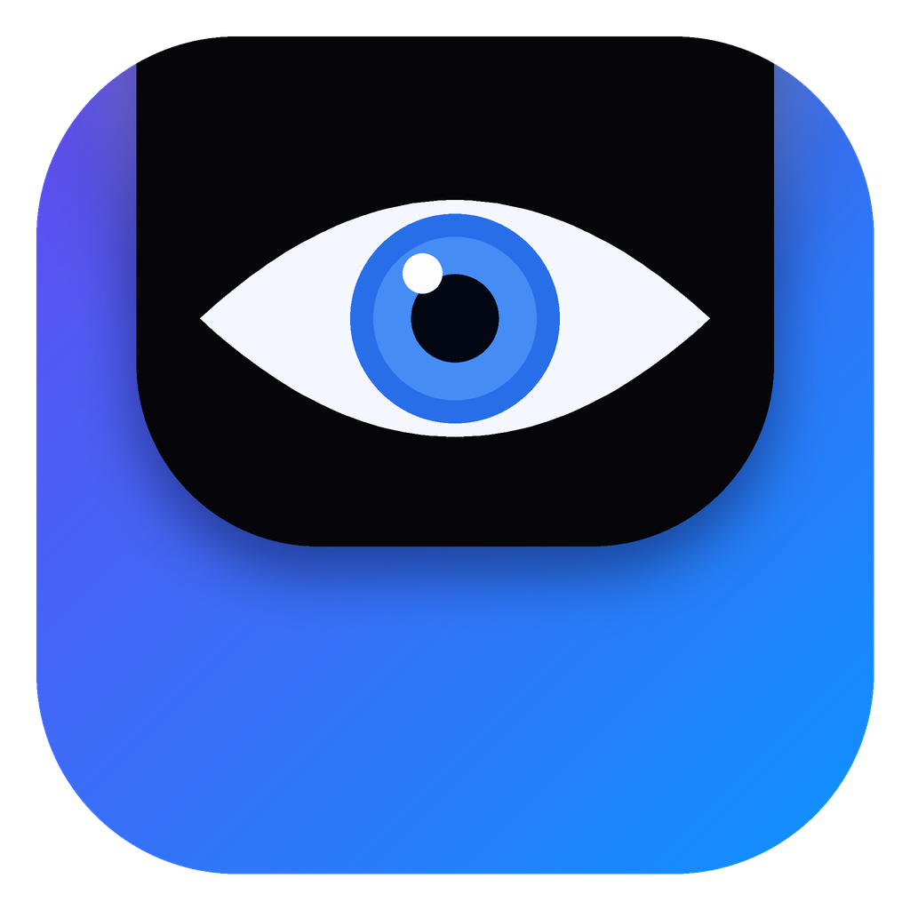
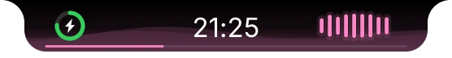
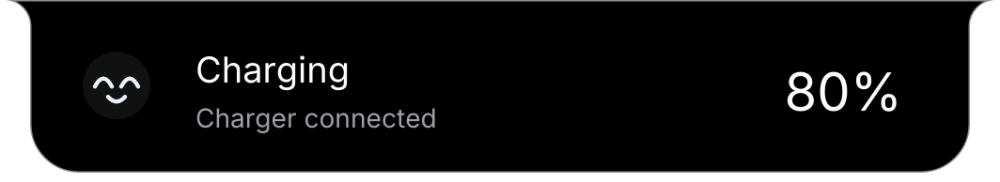

Now playing
Cover, progress, lyrics, volume and media controls for whatever is playing on your machine.

Visus


Idle: battery and time
Windows & Linux · free · native
Visus lives at the top of your screen as a small, quiet pill. Hover, and it opens into music, timers, notes, your clipboard and more. Look away, and it falls asleep.
Dynamic by design
Idle, Visus is just your battery and the time. Play a song and the pill widens to make room for a live visualiser. Start a download and a speed readout slides in. Plug in the charger and it greets you with a face.


Game mode
Visus notices when a game takes the screen and turns into a quiet HUD. Pills, Bars, and Card show available CPU/GPU load, temperatures, RAM, and dedicated VRAM. Compact keeps FPS, a frame-time sparkline, and milliseconds. Click the HUD to cycle through all four layouts.
Windows GPU collection tries NVAPI, NVIDIA-SMI, and WMI/CIM performance counters, with independent GPU-load, temperature, and VRAM availability. Linux supports NVIDIA-SMI and AMD sysfs; FPS comes from active MangoHud logs. Missing values stay unavailable, not invented.
GeForce NOW / SalsaNow: run Visus inside the cloud rig to read its GPU and VRAM. The fallback strategy is adapted from SalsaStats; SalsaStats is not changed or required. A local streaming client cannot report the remote rig's counters. Provider-specific runtime validation is ongoing.
Music
Whatever is playing, Visus picks up the title, artist and cover, spins it on a vinyl, and tints the whole interface with the colour of the artwork. Synced lyrics, seeking and media keys are built in.

A closer look
Move through pages with the side arrows, wheel, or arrow keys. These are captured straight from the app.

Everything in reach
Cover, progress, lyrics, volume and media controls for whatever is playing on your machine.
Start a countdown and a ring appears on the pill. It nudges you when time is up.
Search apps, switch to ones already running, jump between windows, open files with fm.
Capture a thought in a second. Add @18:00 to a task and it reminds you.
Everything you copied recently, one click away, kept only on your device.
Paste an ICS link and upcoming meetings show up, with a heads-up before they start.
Drop files onto the pill to park them while you work, then drag them out where you need them.
Charging, low battery, headphones, controllers, downloads: each gets its own little reaction.
CPU, memory, network speed and weather without opening a single window.
Make it yours
Pick Classic, Flip, or LED, with separate closed-clock and header sizes, optional dimming, and a battery ring that can match the clock height. Then pick who looks back at you when nothing is going on.

And while nothing is happening, someone is watching.


Customization
The pill unfolds into eight modular settings sections, then shrinks back when you close it. Size the closed pill and expanded pages independently, tune the clock and battery ring, choose media-following or fixed accents, and control motion and individual alerts. Changes save locally as you make them.

Closed clock and battery ring: 12-32 px. Header clock: 16-30 px. Closed/open scales: 0.60-1.25x independently. Includes ring-height matching, custom gaps/padding, live charging previews, reduced motion, hover timing, and per-alert toggles. Scrollbars and More below reveal longer sections.

Little reactions
Plug in a charger, connect a controller, lose Wi-Fi, finish a download, or get a new release: the pill peeks out with a face that fits the moment.
Free. No account. Small enough to forget it is running.
Windows 10/11 · Linux (Wayland & X11). If Windows shows a SmartScreen notice, choose “More info”, then “Run anyway”.